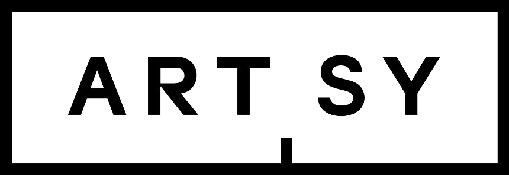

Mary Beard,
2019 Resident
Dame Winifred Mary Beard, DBE, FSA, FBA, is an English scholar of Ancient Roman civilization. Mary Beard is professor of classics at Newnham College, University of Cambridge. She is the author of eighteen books on society and culture in the ancient world, including Women and Power: A Manifesto (2017), The Roman Triumph(2007), and The Parthenon (2002). Since 1992 she has been the classics editor of the Times Literary Supplement, which also hosts her popular blog, A Don’s Life. Beard’s newest book, How Do We Look: The Body, the Divine, and the Question of Civilization (2018), looks beyond the familiar canon of Western imagery to explore the history of art, religion, and humanity, from prehistoric Mexico to modern Istanbul. The book contains text and images that complement her episodes in Civilisations, the epic BBC and PBS documentary television series.

Beard was made an Officer of the Order of the British Empire (OBE) in the 2013 New Year Honours and a Dame Commander of the Order of the British Empire (DBE) in the 2018 Birthday Honours for services to the study of classical civilizations.
Theaster Gates,
2020 Resident
Theaster Gates lives and works in Chicago where he creates work that focuses on space theory and land development, sculpture and performance. In 2010, Gates created the Rebuild Foundation, a nonprofit platform aimed at galvanizing communities through neighborhood regeneration and the development of educational and arts programming and amenities. Many of the foundation's initiatives have focused on the revitalization of Chicago’s South Side, creating hubs and archives for black culture, which serve as catalysts for discussions on race, equality, space, and history.
Known for his recirculation of art-world capital, Gates creates works with a focus on the possibility of the "life within things." Gates smartly upturns art values, land values, and human values. In all aspects of his work, he contends with the notion of Black space as a formal exercise—one defined by collective desire, artistic agency, and the tactics of a pragmatist.

His current academic affiliations with the University of Chicago; the Getty Research Institute, Los Angeles; and Colby College, Waterville, Maine, aid the evolution of earlier vocational pursuits in public service, urban planning, and religious studies.
Gates has exhibited and performed at Palais de Tokyo, Paris, France (2019); Gropius Bau, Berlin (2019), Sprengel Museum Hannover (2018); Kunstmuseum Basel (2018); National Gallery of Art, Washington D.C., USA (2017); Art Gallery of Ontario, Canada (2016); Fondazione Prada, Milan, Italy (2016); Whitechapel Gallery, London (2013); Punta della Dogana, Venice (2013) and dOCUMENTA (13), Kassel (2012). Public collections include Tate Modern, London; Whitney Museum of American Art, New York; Museum of Modern Art, New York; Museum of Contemporary Art, Chicago; and Marciano Art Foundation, Los Angeles.
Gates was the winner of the Artes Mundi 6 prize and was a recipient of the Légion d'Honneur in 2017. He was recently awarded the Nasher Prize for Sculpture 2018, as well as the Urban Land Institute, J.C. Nichols Prize for Visionaries in Urban Development, and is the recipient of the World Economic Forum’s 2020 Crystal Award.
Online Benefit Auction
Live from October 14 to 28, 2020
Bid to Support Art and Scholarship
AAR presents its first online auction featuring artworks and one-of-a-kind experiences offering inside access to the fascinating work of the Academy’s Fellows and Residents in the arts and humanities.
Bid on artworks and experiences from:
David Adjaye, RAAR’16
Alessia Antinori
Polly E. Apfelbaum, FAAR’13
Mary Beard, RAAR’20
Sanford Biggers, FAAR’18
Patricia Cronin, FAAR’07
Carl M. D’Alvia, FAAR’13
E. V. Day, FAAR’17
Allen Frame, FAAR’18
Stephen Greenblatt, RAAR’10
Ann Hamilton, RAAR’17
Bunny Harvey, FAAR’76
Lyle Ashton Harris, FAAR’01
Michelle Hobart
Deborah Kass
Sze Tsung N. Leong, FAAR’19
Beverly J. McIver, FAAR’18
Glendalys Medina, FAAR’13
Susan Meiselas, RAAR’17
Sarah Oppenheimer, FAAR’11
Gregg Pasquarelli/SHoP Architects
Mark Robbins, FAAR’97
Jackie Saccoccio, FAAR’05
Yasmin Vobis, FAAR’17
Auction powered by:
Your support of One Moment / Infinite Ideas provides essential support for the American Academy in Rome, which has fueled the critical thinking, research, and creative endeavor of countless individuals, including 1,800 Rome Prize Fellows.
Gala Co-Chairs
Slobodan Randjelović
Calvin Tsao, 2010 Resident
Honorary Chairs
Mary E. Frank
John F. W. Rogers
His Excellency Armando Varricchio, Ambassador of Italy to the United States
Host Committee
Cynthia and Ron Beck
Suzanne Bocanegra, FAAR’91 and David Lang, FAAR’91, RAAR’17 Mr. and Mrs. Livio Borghese
Jim and Katie Brennan
Martin Brody, RAAR’02
Will Bruder, FAAR’87, FAIA and Louise Roman
William M. Cameron
Cary Davis and John McGinn
Sharon Davis
Jennifer and William H. Fain, Jr., FAAR’02
Frederick B. Fisher, FAAR’08 and Jennifer M. Prebor
Mary and Howard S. Frank
Stephen Greenblatt, RAAR’10
Agnes Gund
Bunny Harvey, FAAR’76
Michelle Hobart
Bruce Horten and Aaron Lieber
Mary Margaret Jones, FAAR’98 and Doug Argue, FAAR’98
Susan and David Kertzer, RAAR’00
Eric Lindgren and Ili Nagy, FAAR’86, RAAR’09
Whitfield Lovell, RAAR'19
Elizabeth McGowan and Guy M. Hedreen, FAAR’94
John P. and Anne Welsh McNulty Foundation
Nancy and John Novogrod
Jeannie and Thomas Phifer, FAAR’96
Slobodan Randjelović and Jon Stryker
Mark Robbins, FAAR’97
John F. W. Rogers
Janet C. Ross
Pat Sapinsley
Jon Michael Schwarting, FAAR’70 and Frances Campani
Gael Towey and Stephen Doyle
Calvin Tsao, RAAR’10, Zack McKown, and David Poma
Suzy and Sadek Wahba
Sydney H. Weinberg
Adam D. Weinberg, RAAR’20
Marion Weiss, RAAR’19 and Michael A. Manfredi, RAAR’19
Fred Wilson, RAAR'20